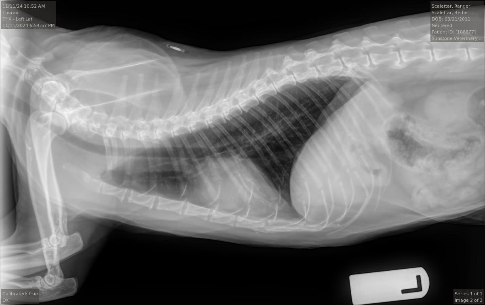
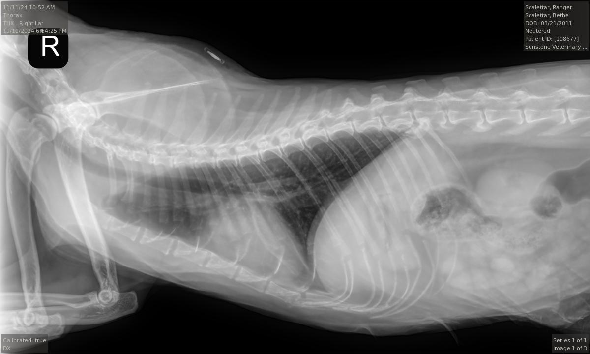
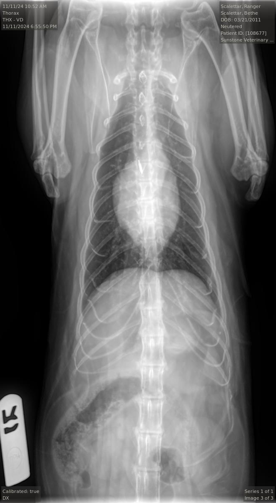

Veterinarians use the full complement of medical imaging techniques to diagnose and treat
animals. Projection radiography is used to identify broken bones, tumors, and foreign objects,
among others. Ultrasound is used to study soft tissue, including cardiac function, and to guide
biopsy needles, among others. More complicated procedures involving expensive equipment
and/or expert analysis are typically performed at specialty clinics. Associated techniques can
include computed tomography (CT), nuclear imaging (e.g., PET), and magnetic resonance
imaging (MRI). Veterinary uses of these advanced techniques track their uses on humans.
Moreover, like medical doctors, veterinary specialists receive special training and certification
in these techniques (see, e.g.,https://acvr.org).
This case study explores the use of x-rays and ultrasound during a visit to the veterinarian. The
authors' cat, Ranger, was being treated for small cell lymphoma. He had been receiving
treatment for a few years but had seemingly started to relapse. The specialist took X-ray and
ultrasound images, since the disease had affected the gut, and ran various blood panels. The
conclusion was that Ranger’s condition had deteriorated, leading to adjustments in his
medications. This Case Study focuses on the imaging portion of the examination.
Veterinary diagnostic radiographic studies of the thorax and/or abdomen typically include at
least two projections: (1) a right (R) or left (L) lateral view, and (2) a ventrodorsal (VD) or
dorsoventral (DV) view. Right and left lateral views are taken with the animal lying on its right
(R) or left (L) side, respectively. Ventrodorsal and dorsoventral views are taken with the animal
lying on its back (VD) or stomach (DV), respectively. Radiopaque markers (e.g., “L” and “R”) are
placed near the animal to distinguish the views.
Projection radiographs lack depth information because the intensity of each point in the image
is a superposition of all structures along a given straight-line X-ray trajectory through the body.
However, by taking images along at least two orthogonal directions (e.g., R or L AND VD or DV),
the veterinarian can obtain three-dimensional information from the two-dimensional images.
For example, the pairs of superimposed ribs visible in the accompanying L and R radiographs
are visible as separate left and right ribs in the VD view. Taking both L and R views, or both VD
and DV views, can yield additional information.
The radiologist stated that the Ranger's radiographs were largely normal for an older cat. In
particular, they show arthritic changes in both elbows and the middle back. However, the
images did not show any abnormalities in the lungs and only mild, if any, enlargement of the
heart. Overall, these were good results.



Veterinary ultrasound examinations of the thorax and/or abdomen typically include a number
of views selected to assess the health and function of internal organs. Unlike with radiography,
the images do not include the lungs because ultrasound reflects off the outer boundaries of the
lungs, making it difficult to see inner structures.
The veterinarian generated a series of images showing different organs and substructures by
changing the position and orientation of the ultrasound transducer. The images were collected
in a defined order, which is repeated from patient to patient, ensuring that nothing is missed. In
Ranger's case, the sonographer collected about twenty images during an examination that
lasted about fifteen minutes.
The sonographer stated that Ranger's ultrasound images were largely normal for an older cat. In particular, they show changes in the kidneys that are commonly noted in geriatric cats and that reflect a risk for the development of chronic kidney disease. However, the images did not show any significant abnormalities in Ranger's stomach, intestines, and associated lymph nodes. Nonetheless, the results did not rule out recurrence of Ranger's small cell lymphoma.